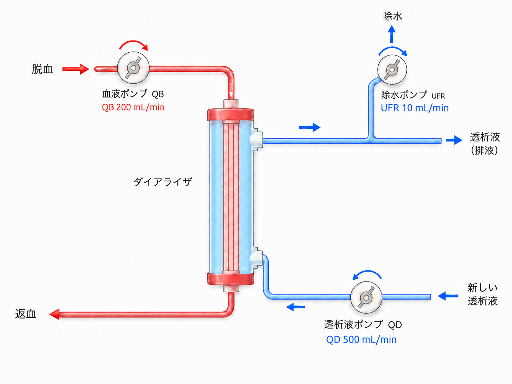

| CKD | Chronic Kidney Disease — 慢性腎臓病（G はグレードではなく GFR の G） |
| GFR | Glomerular Filtration Rate — 糸球体濾過量 |
| DW / DB | Dry Weight / Dry Body weight — ドライウェイト（除水目標体重） |
| QB | Blood Flow Rate — 血液流量（mL/min） |
| QD | Dialysate Flow Rate — 透析液流量（mL/min） |
| UFR | Ultrafiltration Rate — 除水速度（mL/hr） |
| ECUM | Extracorporeal Ultrafiltration Method — 体外限外濾過法（除水のみ） |
| HD | Hemodialysis — 血液透析 |
| ADPKD | Autosomal Dominant Polycystic Kidney Disease — 常染色体優性多発性嚢胞腎 |
| EPO | Erythropoietin — エリスロポイエチン（腎性貧血に関与） |
| CKD-MBD | Chronic Kidney Disease — Mineral and Bone Disorder — 慢性腎臓病に伴うミネラル骨代謝異常 |
| BNP | Brain Natriuretic Peptide — 脳性ナトリウム利尿ペプチド（心室進展で上昇） |
| CTR | Cardiothoracic Ratio — 心胸郭比（胸部 X 線での指標、目標 <50%） |
| AF | Atrial Fibrillation — 心房細動（BNP 高値の原因となる） |
腎臓の最大の役割は尿をつくること（老廃物と水分の排泄）である。それ以外に以下の機能も担っている。
① 老廃物・水分の排泄
尿素窒素・カリウム・リン等の老廃物と余剰な水分を体外へ排出する。透析で代替可能。
② ビタミン D の活性化
腎臓で 25(OH)D → 1,25(OH)₂D に変換。腎不全ではこの活性化が低下し、CKD-MBD（カルシウム・リン代謝異常）を引き起こす。透析では代替不可。
③ エリスロポイエチン（EPO）産生
腎臓が低酸素を感知してEPOを産生し、赤血球造血を促進する。腎不全では EPO が低下し腎性貧血を来す。透析では代替不可。
その他にレニン・アンジオテンシン・アルドステロン系（RAAS）の調節にも関与している。
| 障害された機能 | 結果 | 透析で代替 |
|---|---|---|
| 老廃物排泄↓ | 尿毒症・代謝性アシドーシス・高カリウム血症・高リン血症 | ✓ 可能 |
| 水分排泄↓ | 体液過剰・浮腫・高血圧・心不全 | ✓ 可能 |
| ビタミンD活性化↓ | 低カルシウム血症・骨疾患（CKD-MBD） | × 不可 |
| EPO産生↓ | 腎性貧血 | × 不可 |
透析が代替できるのは老廃物排泄と水分排泄のみ。ビタミンD製剤や ESA（赤血球造血刺激因子製剤）は別途投与が必要となる。
透析は非常にシンプルな構造で成立している。患者の血液（バスキュラーアクセス経由）をダイアライザーに通し、また体内に戻すだけである。
血液ポンプ QB
患者の血液を回路内に引き込み循環させる。流速を QB（Blood Flow Rate）という。
透析液ポンプ QD
ダイアライザー内を清浄な透析液が流れる。流速を QD（Dialysate Flow Rate）という。
除水ポンプ UFR
透析液の出口側で余分に液を排出し、体内の水分を引き出す。除水速度を UFR（Ultrafiltration Rate）という。

透析回路の概略図（クリックで拡大）
ダイアライザーの内部は細いストロー状の中空糸（hollow fiber）が束になった構造で、その壁が半透膜として機能する。
透析液は老廃物がゼロの状態に調整されている。患者血液中には老廃物（尿素・カリウム等）が高濃度で存在するため、半透膜を介して濃度の高い側（血液）から低い側（透析液）へ物質が移動する。これが拡散の原理である。
| 物質 | 血液中濃度 | 透析液中濃度 | 移動方向 |
|---|---|---|---|
| 尿素（BUN） | 高い | ゼロ（低い） | 血液 → 透析液 |
| カリウム | 高い | 低め設定 | 血液 → 透析液 |
| 重炭酸（HCO₃⁻） | 低い | 高め設定 | 透析液 → 血液 |
| カルシウム | 低め | 高め設定 | 透析液 → 血液 |
このように透析液の組成を調整することで、老廃物の除去と不足物質の補充を同時に行っている。
除水ポンプを回すと、透析液側に陰圧（transmembrane pressure）が生じる。この圧力差により、血液中の水分が半透膜を通過して透析液側に引き出される。
除水ポンプの速度を変えることで除水量を調整でき、この速度のことを UFR（Ultrafiltration Rate） と呼ぶ。かっこよく呼びたいときは「UFR」と言おう。
ECUM は透析液を流さず、除水ポンプのみを使って血液から水分を引き出す方法である。拡散は行われず、等張性の除水のみを実施する。
ECUM の利点
透析液を流さないため浸透圧が変化しない。血行動態が不安定な患者でも比較的血圧を保ちながら除水ができる。
使用場面
血圧不安定で通常の HD が困難だが除水（体液管理）が急務な状況。透析効率（老廃物除去）は不要または後回しにできるとき。
| パラメータ | 概要 | 影響 |
|---|---|---|
| ① 透析時間 | 1回の透析時間（基本4時間） | 効率に関与 |
| ② QB | 血液流量（200〜300 mL/min） | 効率に関与 |
| ③ QD | 透析液流量（500 mL/min・固定） | 効率に関与 |
| ④ ダイアライザー | 膜の種類・面積（膜面積で効率が変わる） | 効率に関与 |
| ⑤ UFR（除水速度） | 除水量 ÷ 時間で決まる | 除水量に関与 |
上4つが老廃物の除去効率を決め、UFRは体液管理（水分量）を決める。別々の概念として整理しておこう。
透析時間は長いほど老廃物の除去効率が上がる。しかしQOL（長すぎると生活への影響が大きい）と効率のバランスから、週3回・1回4時間が標準となっている。
ただし、以下のような状況では時間を調整することがある：
QB が高いほど効率は上がるが、300 mL/min を超えると効率向上の上乗せが少なくなることが研究でわかっている。200〜300 mL/min が現実的な設定範囲。
QB の変更を検討するとき：カリウムが高い・BUN が高いなど、透析効率を上げたいときにまず QB 増加を提案してみる。
QD は通常 500 mL/min に固定されており、研修医が変更する機会はほぼない。ただし QB:QD = 1:2〜2.5 が最も効率的という概念は理解しておこう（CHDF 等の勉強で役立つ）。
この「少ない方のフローに依存する」概念は CHDF（持続的腎代替療法）で置換液量・透析液量を設定する際にも重要になる。QB と QD の比率を意識することで、より効率的な処方が可能になる。
ダイアライザーには多種類あるが、膜面積が大きいほど効率が高いというシンプルな関係がある。製品名の末尾の数字が膜面積（m²）を示すことが多い（例：25 = 2.5 m²、15 = 1.5 m²）。
ガイドラインでは「体液量が適正で、透析中に血圧低下を生じることなく、長期的にも心臓への負担が少ない体重」と定義されている。
簡単に言うと「脱水でも過水和でもない、その患者にとってちょうど良い体重」であり、この体重に到達するまで除水を行う。
| DWのずれ方向 | 病態 | リスク |
|---|---|---|
| 過水和（DW が高すぎる） | 血管内容量増加 → 高血圧・浮腫・呼吸困難 | 心不全・死亡リスク↑ |
| 脱水（DW が低すぎる） | 血管内容量低下 → 低血圧・循環血液量減少 | 循環不全・死亡リスク↑ |
正常腎では、水分や塩分を摂取すると腎臓が体液量を感知して尿量を増加させ、自動的に調整してくれる（例：ビール3Lを飲んでも翌日は体重がほぼ元に戻る）。
腎不全患者ではこの調整機構が失われ、摂取した水分・塩分がそのまま体内に蓄積される。したがって、我々医療者が腎臓の代わりに体液量を評価し、適切な DW を設定し続ける必要がある。
DW の適正を判断する「これ一つ」という指標はなく、複数の指標を組み合わせて評価する。
血圧・浮腫
過水和 → 高血圧・浮腫 ／ 脱水 → 低血圧。目標：収縮期血圧 <140 mmHg、浮腫なし。
⚠ 降圧薬で血圧が「抑えられて」いるだけの場合がある。処方降圧薬を必ず確認する。
胸部 X 線（CTR）
過水和 → 心拡大・肺うっ血。CTR が増大していれば DW 再評価の契機。目標：CTR <50%。
⚠ 毎透析では撮らない。週1回〜2ヶ月に1回が一般的（ICU管理患者は適宜）。
BNP
心室進展（過水和）で上昇する心臓ホルモン。体液量過剰の鋭敏な指標。採血は週末の透析終了後が最適。
⚠ AF・エンレスト（サクビトリル/バルサルタン）使用中は高値になるため解釈注意。経時的変化で評価する。
患者の自覚症状
「透析後に頭痛・めまい・気分不良」→ 過除水（脱水）の可能性。「透析前から息苦しい・足がむくむ」→ 過水和の可能性。患者本人から「透析後どんな感じか」を聞く習慣をつけよう。
DW の変更は慎重に、少しずつ行う。研修医が提案するときは以下を参考にする。
まずむくみ・血圧・CTR・BNP を評価
過水和所見があれば DW を下げる方向で検討。脱水所見があれば DW を上げる。
DW を 0.3〜0.5 kg ずつ修正
一度に大きく変更しない。少量ずつ変えて再評価する。
1〜2週間の幅で評価・再設定
短期間で何度も変更するより、1週間ごとに評価して微調整していく。
血圧が 110 mmHg 台で「コントロール良好」と見えても、降圧薬を何剤も内服している患者では注意が必要。実際には過水和で血圧が高くなるはずのところを薬で無理に抑えている可能性がある。
このような場合は、降圧薬を減らしながら DW を下げていく方向が本来の治療となる。DW が適正になれば降圧薬はいらなくなることもある。
入院患者では食事量が低下し、筋肉・脂肪が減少することが多い。同じ DW を設定し続けると、除脂肪・除筋肉分だけ相対的に水分割合が増え、同じ DW でも過水和になってしまう。
透析の除水は血管内（約 3 L）からしか直接引けない。間質の浮腫は血管内にゆっくり戻ってきて（プラズマリフィリング）、初めて除水できる。UFR が速すぎると血管内が先に枯渇してショックになる。
重度の過水和（心不全入院など）では複数回透析・CRRT・ECUM などに分けて体液を管理する。一気に引こうとしない。
UFR の上限が限られている以上、入院中に余分な水分・塩分が入らないようにすることが体液管理の第一歩である。透析患者を担当したら以下を確認しよう。
透析患者・腎不全患者を受け持ったとき、以下の情報は必ずカルテに記載すること。これを見れば腎臓内科医が患者背景を概ね把握できる。
| 記載事項 | 記載例・補足 |
|---|---|
| 原疾患（CKD の原因） | 糖尿病性腎症、IgA 腎症、ADPKD、高血圧性腎硬化症 など。「病態が全く異なる」ので必ず明記。 |
| CKD ステージ | 「CKD G5」と書く（G = GFR のG、グレードではない）。必要に応じて T（移植後）などを付記。 |
| 透析導入時期 | 「〇年〇月導入」。導入直後と 20 年継続者では病態・血管アクセス・合併症が大きく異なる。 |
| バスキュラーアクセス | 内シャント、パーマネントカテーテル、移植血管 など |
| 現在の透析スケジュール | 曜日・施設名（外来透析か入院透析か） |
本ページは ICU コアカンファレンスにおける下山先生（腎臓内科）の講義内容を元に作成した教育用サマリーです。
実際の透析処方・DW 設定は患者個別の状態に応じて腎臓内科医と相談のうえ決定してください。
制作：ICU 関谷